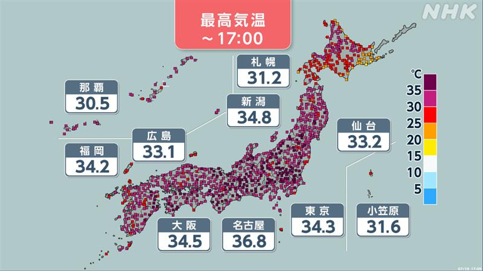
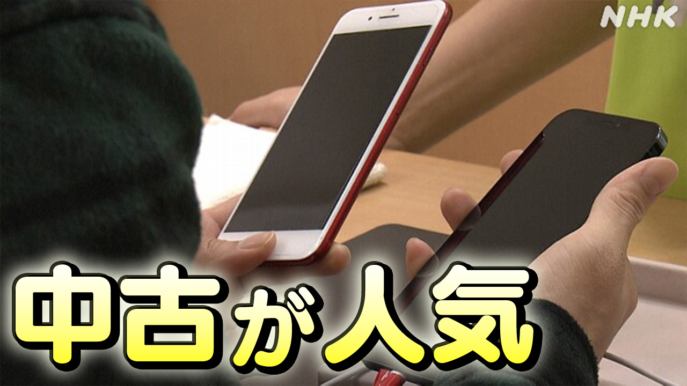
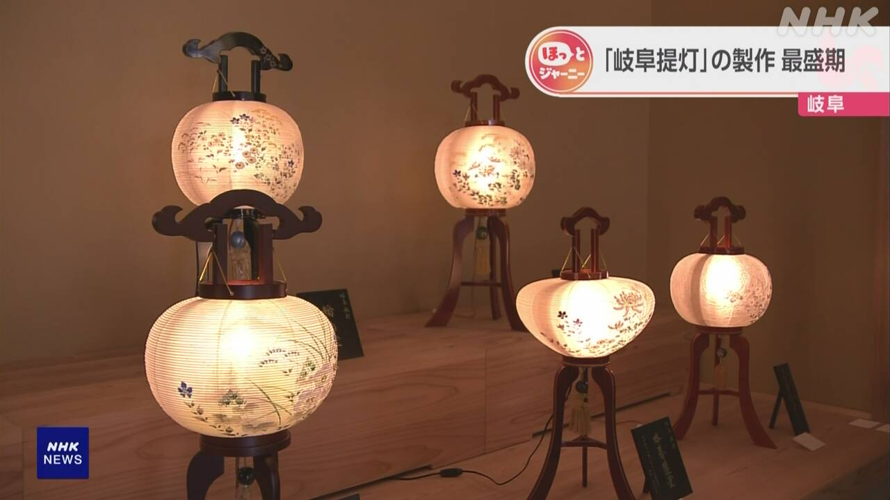

最新ニュース
1️⃣ 厳しい暑さが続く 東北地方と北海道は雨も気をつけて

15日も多くの場所で、厳しい暑さになりました。
愛媛県、長野県、静岡県で、38℃以上になったところがあって、危険な暑さになりました。
この暑さは16日も続きそうです。
九州から関東地方までの多くの県などに、熱中症の危険を知らせる「熱中症警戒アラート」が出ています。エアコンを使って、水や塩分をとって、熱中症にならないようにしてください。
気象庁によると、東北地方と北海道は、15日の夜から雨が強くなってたくさん降りそうです。山が崩れたり低い所に水が入ったりするかもしれません。気をつけてください。
2️⃣ 消防隊員の体を冷たくするために小さいプールを使う
暑い日が続いています。火事のときに火を消す仕事をする消防隊員は、熱中症になる危険があります。
三重県桑名市の消防は、隊員が熱中症にならないように新しいやり方を始めました。
家にあるお風呂のような形の小さいプールを使います。使わないときは小さくして運ぶことができて、水を入れて使います。
消防の練習の日、気温が35℃以上になってとても暑くなりました。
隊員たちは、服を着たままプールに入って体を冷たくしていました。
消防の人は「暑い中でも安全に仕事ができるようにしたいです」と話していました。
3️⃣ 中古のスマートフォンを買う人が増えている

少し使った中古のスマートフォンを買う人が、最近増えています。
調査した会社によると、中古のスマートフォンは、2025年度の1年に360万台以上売れました。
前の年より12%以上増えました。7年続けて増えています。
理由の1つは、新しいスマートフォンの値段が高くなっていることです。
調べた会社の人は「中古でも、まだ十分使うことができると考えて、買う人が増えています。中古を買う人はこれからもっと増えるでしょう」と話しています。
4️⃣ 岐阜市 夏に飾るちょうちんを作る仕事が忙しい

日本では夏に、亡くなった人のために祈る習慣があります。その時に、灯りをつけたちょうちんを飾る家があります。
岐阜市に、130年ぐらい前からちょうちんを作っている会社があります。今とても忙しい季節です。
ちょうちんは、細い竹を使ってボールのような丸い形を作ります。そこに、紙を貼って花や草の絵をかきます。
最近は、テーブルの上に置くことができる、小さいちょうちんに人気があります。
会社の人は「ちょうちんのやさしい光ときれいな絵を見てもらいたいです」と話していました。
- 〜になる
- 〜がある / 〜がいる
- 〜ところ
- 〜以上
- 〜そうだ
- 使役 (〜させる / 〜せる)
- 〜まで
- 〜ている / 〜でいる
- 〜から〜まで
- 〜など
- 〜から
- 〜ならない
- 〜てください / 〜でください
- 〜ようにする
- 〜ように
- 〜によると
- 〜かもしれない / 〜かもしれません
- 〜たり〜たりする
- 〜方
- 〜ような
- 〜こと
- 〜ことができる
- 〜ても / 〜でも
- 〜中
- 〜より
- 〜ため
- 〜ため(に)
- 〜くらい / 〜ぐらい
- 〜てもらう / 〜でもらう
vebaev.github.io
Generated: 2026-07-15 12:16:16 UTC